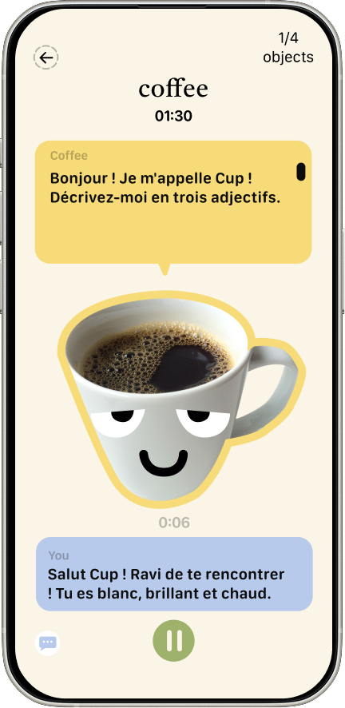
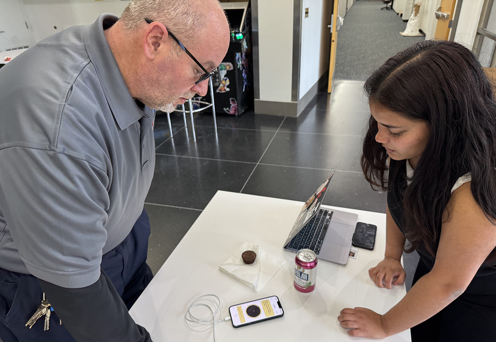
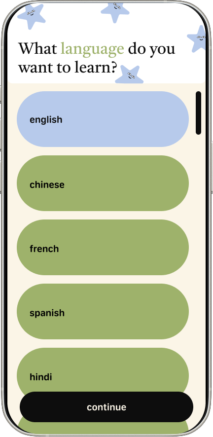
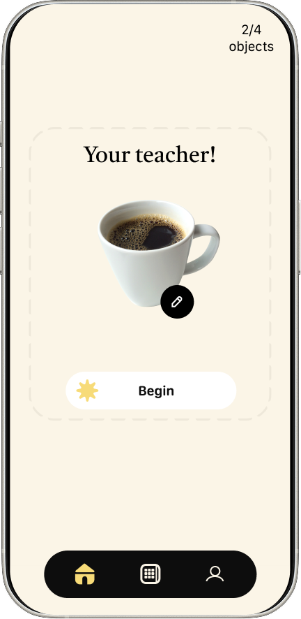
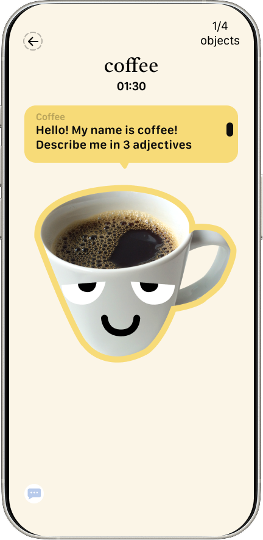
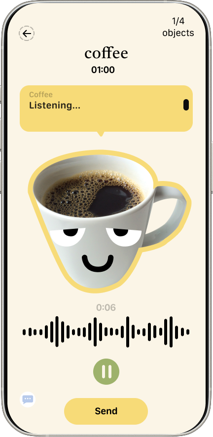
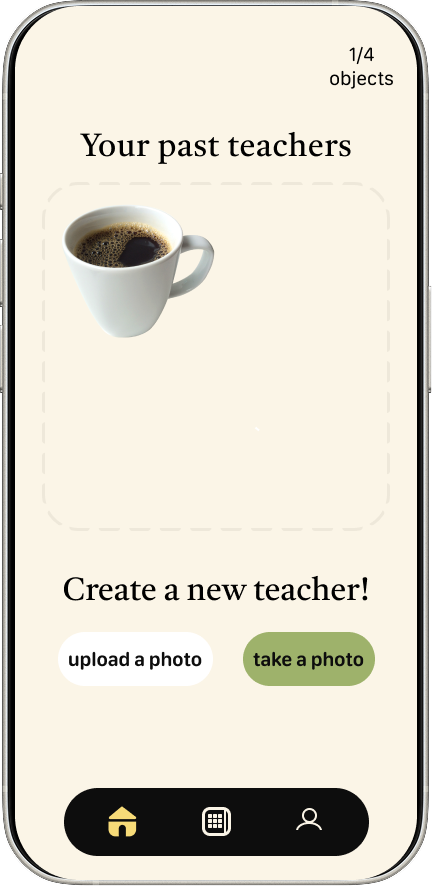
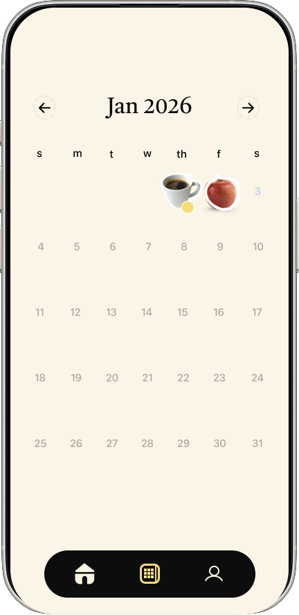

Language Learning · UX/UI · 2026
An AI-driven adaptive conversational platform that teaches vocabulary through the objects around you. Scan, speak, repeat.
Try the app
01 · The Problem
Most conversational apps teach you to say generic sentences you'll never use. Vocabulary is memorized in isolation, and separated from the real places and objects where conversation actually happens.
02 · User Research
"I have diffculty with remembering vocabulary because if you don't use words frequently you lose them"
Participant 3 · French learner, 25
"In other language apps, I don't like how I'm put at a level where I feel like it's too beginner for me"
Participant 6 · Russian learner, 27
During conversation, sometimes I lose words mid-sentence, and end up describing words instead of the vocab word itself"
Participant 1 · Hindi learner, 19
03 · The Concept
Point your camera at any object. talkIT identifies it, teaches you the word, then pulls you into a real conversation about what you're looking at.
04 · Process
Three rounds of user testing shaped talkIT from a basic flashcard scanner into a full conversational flow. Each round surfaced a different failure — and a sharper solution.

Simple object recognition with vocabulary overlay. Users learned words but did not see an instance to use them.
Added scripted follow-up questions after scanning. Users wanted to respond naturally, not choose from fixed options.
Full open-ended AI conversation guided by the scanned object. Users stayed engaged 3× longer and reported that the conversation flow felt easy.
05 · Final Design
A warm, high-contrast UI designed for use on the go and in the moment. Designed with a bold type for quick reading, large tap targets, and a conversational tone that makes the AI object feel like a patient tutor.





